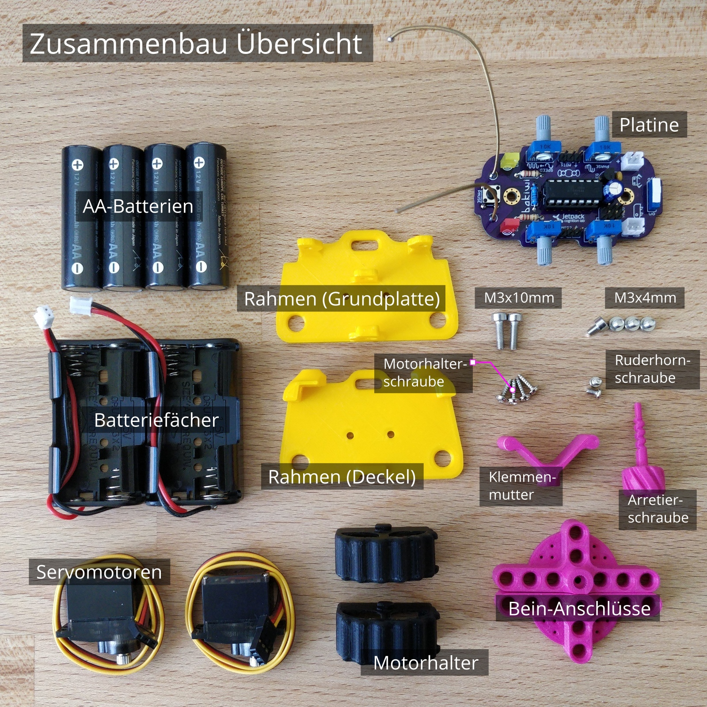

Vorbereitung
Werkzeuge
Für das Löten der Bakiwi-Elektronik benötigst du folgende Werkzeuge:
-
Lötkolben (oder Lötstation) mit dünner Lötspitze
-
Lötzinn (empfohlen: Dicke 0.5—0.75mm mit integriertem Flussmittel, bleifrei)
-
Messingwolle mit Behälter ("Trockenreiniger"), alternativ ein angefeuchtetes Schwämmchen
-
Seitenschneider oder Knipszange
-
Multimeter (optional)


|
Note
|
Falls du noch gar keine Erfahrung im Löten hast, dann empfehlen wir dir, vorher ein Einführungsvideo oder Tutorial anzuschauen um schon mal eine ungefähre Vorstellung vom Löten zu entwickeln. Noch besser ist es, wenn du den Bausatz mit jemand anderem zusammen aufbaust, der bereits ein wenig löten kann. |
Bauteile sichten
Überprüfe alle Bauteile auf Vollständigkeit. Zusätzlich zu den gezeigten Teilen hast du vielleicht Material beiliegen, welches sich für die Fühler deines Bakiwi eignet, z.B. Gitarrensaiten oder Pfeifenputzer.

Lege alle Kleinteile in ein Gefäß, damit dir keines verloren gehen kann. Nimm dir zuerst die Bakiwi-Platine und leg sie vor dir hin. Die Oberseite der Platine ist die mit den Bauteilbeschriftungen. Alle Bauteile werden nun nach und nach in einzeln erklärten Schritten auf der Oberseite eingesteckt und auf der Unterseite festgelötet. Die beste Übereinstimmung mit den Bildern dieser Anleitung hast du, wenn du die Platine so drehst, dass du den Bakiwi-Schriftzug lesen kannst und sie mit der Beschriftung POWER zu dir gedreht ist und PAUSE nach oben zeigt.


Schalte die Lötstation ein und überprüfe die Temperaturanzeige. Wenn die Temperatur einstellbar ist, stelle sie passend zum Legierungs-Mischungsverhältnis deines Lötzinns ein (Aufschrift beachten). Wenn du dir unsicher bist, beginne mit 330°C, abhängig von der Leistung der Lötstation ist vielleicht eine etwas höhere Temperatur nötig. Wenn sich das Löten klebrig anfühlt, dann kann die Temperatur zu niedrig sein. Erhöhe bei Bedarf die Temperatur allmählich, bis das Lot mühelos schmilzt.
|
Tip
|
Wenn deine Lötspitze auch bei stetigem Säubern nicht mehr glänzt und immer wieder dunkel wird ist die Temperatur vermutlich zu hoch eingestellt. |
Nimm dir Zeit!
Das Zusammenlöten deines Bakiwis erfordert Ruhe und Konzentration. Die benötigte Zeit ist von Mensch zu Mensch unterschiedlich und sehr vom Vorwissen abhängig. Absolute Neulinge sollte 2 Stunden für das Löten einplanen, Profis schaffen das mitunter in 30 Minuten.
1. Die Bauteile einlöten
1.1. Widerstände
Nimm dir die Widerstände zur Hand. Es gibt einen blauen Widerstand und zwei in beige. Beginne damit, das Papier an jeweils beiden Enden des blauen Widerstands abzuziehen.


Nun biege die beiden Draht-Enden mit deinen Fingern direkt an ihrem Ursprung um, sodass sie beide in dieselbe Richtung zeigen und sich die beiden Drähte parallel gegenüberstehen. Der blaue Widerstand hat die Bezeichnung R3. Suche nach dem abgebildeten Widerstandssymbol auf der Platine, es befindet sich unmittelbar unter dem Bakiwi-Schriftzug. Setze ihn wie auf dem Bild gezeigt auf der Platine ein. Ein Widerstand besitzt keine Polarität, es spielt also keine Rolle, wie herum du diesen einsetzt.


Halte das eingesetzte Bauteil mit den Fingern fest, drehe die Platine vorsichtig um und leg Sie vor dir ab. Beginne nun damit, die Drahtenden auf der Platinenunterseite festzulöten. Achte dabei darauf, den Draht und die Lötfläche um das Loch gleichzeitig zu berühren und aufzuheizen während du das Lötzinn hinzufügst. Die Wärmeübertragung funktioniert am besten, wenn die Lötspitze kurz vorher gereinigt und schon etwas mit Zinn benetzt ist.


Entferne den überstehenden Draht, indem du ihn mit einer geeigneten Zange (z. B. Seitenschneider) abknipst. Entferne dabei den Draht möglichst knapp über deiner Lötstelle, ohne diese zu beschädigen.


Nun folgen die beiden anderen Widerstände R1 und R2 (beige). Sie werden links und rechts vom Schriftzug angebracht. Die Reihenfolge ist dabei egal, du kannst auch gleich beide zusammen einbauen. Die Arbeitsschritte sind die gleichen wie beim ersten Widerstand.


Gratulation. Du hast den ersten Schritt gemeistert. Vergleiche dein Ergebnis mit dem Bild aus dieser Anleitung.
1.2. Kondensator
Als Nächstes ist der Kondensator an der Reihe. Suche nach dem kleinen orange-farbenen Bauteil in Form einer Linse. Die Position auf der Platine ist diesmal weiter zum anderen Ende bei der Markierung C1. Schaue auf das abgebildete Symbol.


So wie eben bei den Widerständen wird der Kondensator von oben in die Platine gesteckt und von der Rückseite festgelötet.


Nach dem Löten kannst du hier ebenfalls die überstehenden Draht-Enden abzwicken.


Geschafft. Dies war das Ende deiner Aufwärmrunde. Denn jetzt wird es eine Idee kniffeliger.
1.3. Schaltkreis-Sockel
Der Schaltkreis-Sockel hat ganze 14 Kontakte und das heißt für Dich, dass du Deine Lötfertigkeiten jetzt richtig trainieren kannst. Denn alle 14 Lötstellen sind identisch.


Die Position des Sockels auf der Platine kannst du nicht übersehen. Der Sockel hat auf einer Schmalseite eine kleine Kerbe und diese sollte, wie auf der Platine gekennzeichnet, nach vorne zeigen.


Achte beim Löten darauf, dass du zunächst erst eine Ecke und dann die schräg gegenüberliegende Ecke anlötest, falls du den Sockel noch ein wenig tarieren möchtest.


Tada. Du hast nun bereits 22 Lötstellen auf der Bakiwi-Platine gesetzt. Wenn du bisher nicht so viel gelötet hattest, solltest du spätestens jetzt den Dreh gut raushaben.
1.4. Taster
Der Taster wird an der Stelle mit der Markierung PAUSE eingesetzt. Wenn du den Taster spielend leicht einsetzen kannst ohne die Beinchen zu biegen ist er auch automatisch richtig herum. Mitunter hörst du ein leises Knackgeräusch, wenn der Taster einrastet.


|
Important
|
Die Lötstifte des Tasters sind ein wenig spitz, achte beim Einsetzen des Tasters auf deine Finger. Nach dem Einlöten solltest du diese Spitzen mit der Zange entfernen. |

1.5. Spannungswandler
Das nächste Bauteil wird etwas schwieriger. Halte zunächst nach dem abgebildeten Symbol VREG auf der Platine Ausschau, es ist knapp über dem orangenen Kondensator zu finden und sieht aus wie ein angeschnittener Kreis.


Achtung! Jetzt wird es etwas fummelig. Der Spannungswandler hat drei dünne Beinchen, die superdicht aneinander liegen. Damit du den Spannungswandler einsetzen kannst, muss das mittlere Bein etwas in Richtung der Rundung umgebogen werden, sodass die Enden der Drähte ein kleines Dreieck aufspannen. Du kannst eine Pinzette oder einen Bleistift zur Hilfe nehmen oder es vorsichtig mit deinem Fingernagel probieren.

Die richtige Anordnung der Beinchen ist bei diesem Bauteil entscheidend für seine korrekte Funktion. Achte daher darauf, dass die Form des Bauteils mit der auf der Platine abgebildeten Zeichnung übereinstimmt. Setze den Spannungswandler ein und drücke ihn wie abgebildet Stück für Stück weiter hinein. Dabei wird sich das mittlere Beinchen noch weiter verbiegen — das ist in Ordnung.


Wenn der Spannungswandler bis auf die Platine gedrückt ist, sollte er kaum 1 mm höher sein als der Schaltkreissockel. Nun löte die drei Beine wie gehabt fest und kürze die Drähte nach dem Löten mit der Zange. Du wirst feststellen, dass die Lötstellen diesmal sehr dicht beieinander sind. Konzentriere dich gut, damit kein Kurzschluss entsteht.


Gut gemacht. Jetzt wird das Löten erst einmal wieder etwas einfacher, versprochen.
1.6. Batteriekabel-Buchsen


Setze nun die zwei weißen Batteriebuchsen bei den Markierungen BAT1 und BAT2 ein. Achte dabei darauf, dass du sie genau wie auf der Platine abgebildet einsetzt. Die kleinen Lücken und Kerben an den Buchsen sind auch auf der Platine abgebildet. Die korrekte Ausrichtung ist hier sehr wichtig!


Mit ein wenig Geschick kannst du beide Buchsen im gleichen Arbeitsgang einsetzen und festlöten. Auch hier bietet es sich an, zunächst ein Beinchen festzulöten und noch mal die Ausrichtung zu korrigieren falls nötig.
|
Caution
|
Achtung! Vergleiche an dieser Stelle bitte noch einmal genau deine Platine mit den abgebildeten Fotos. Eine verkehrt herum eingelötete Batteriebuchse führt bei Anschluss der Batterie später zu einem Verpolen und endet möglicherweise in der Zerstörung von Teilen deines Bakiwi. Daher schau lieber zweimal hin. |
1.7. An/Aus-Schalter
Weiter geht es mit dem Einsetzen des An/Aus-Schalters. Dieser ist blau/weiß und wird auf der Platine bei der Markierung POWER platziert. Wichtig ist hierbei, dass das weiße Teil Richtung off zeigt. Prinzipiell kannst du den Schalter auch andersherum einlöten, er funktioniert in beide Richtungen gleichermaßen. Stelle bloß sicher, dass er in der OFF-Position ist, d. h. dass dein Bakiwi ausgeschaltet ist, wenn wir später die Batterien einlegen.


|
Caution
|
Zuviel Hitze lässt den Schalter schmelzen und kann ihn unbrauchbar machen, daher achte beim Löten darauf, Stift und Lötfläche stets gleichzeitig aufzuheizen, damit der Lötvorgang kurz und effektiv ist. |


Die Lötstifte sind recht lang und sollten nach dem Festlöten ein wenig gekürzt werden. Das Material der Schalterstifte ist auch dicker als das der anderen Bauteile, sodass du etwas mehr Kraft beim Abknipsen benötigst.
1.8. Stiftleisten
Widme dich nun den drei Stiftleisten. Die beiden einreihigen Stiftleisten (1x3) werden mit dem kurzen Ende von oben in die Platine bei MOT1 und MOT2 eingesteckt und wie gehabt auf der Rückseite festgelöten. An ihnen werden später die Motoren deines Bakiwi angeschlossen.


Am besten setzt du beide Stiftleisten zusammen ein, drehst dann die Platine und stellst sie wie in der Abbildung gezeigt auf die noch etwas wackeligen Stiftleisten. Achte darauf, dass die Stifte möglichst senkrecht zur Platine stehen. Wenn du zuerst an jeder Stiftleiste nur einen Stift festlötest, kannst du die genaue Position durch nochmaliges Aufheizen korrigieren, sollte sie nicht gleich beim ersten Mal gerade sein.


Die doppelreihige Stiftleiste (2x3) wird bei PROG ebenfalls mit Ihrem kurzen Ende von oben eingesetzt. Das Einlöten sollte nun einfacher sein, weil die beiden verlöteten einreihigen Stiftleisten bereits die Platine stabilisieren. Die doppelreihige Stiftleiste ist der Programmieranschluss, falls du später das Programm deines Bakiwi verändern möchtest.
1.9. Leuchtdioden
Dein Bakiwi bekommt zwei Leuchtdioden (LED) um dir den Zustand des Lauf-Oszillators anzuzeigen. Die Position der LEDs ist mit D1 und D2 markiert. Farblich kannst du selbst entscheiden, welche LED auf welche Seite soll. Du kannst auch andersfarbige LEDs einbauen, wenn du welche hast.


|
Important
|
Leuchtdioden haben eine sogenannte Polarität, d. h. es ist nicht egal, wie herum sie eingebaut werden. Erkennen kannst du das anhand der unterschiedlich langen Beine. Das längere Bein ist immer der Pluspol, das kürzere Bein ist der Minuspol. Du kannst dir das gut merken, wenn du dir vorstellst, dass du gedanklich ein Pluszeichen auseinander baust und die Striche hintereinanderlegst ( |


Setze also die Leuchtdioden gemäß ihrer Polarität und deiner Wunschfarbe ein und löte sie fest. Die Beine kannst du danach wie immer kürzen.
1.10. Elektrolytkondensator
Der Elektrolytkondensator (kurz: Elko) wird genau wie im vorherigen Schritt (langes Bein = Pluspol) eingebaut. Seine Position ist mit C2 markiert. Der Minuspol ist sogar auf dem zylinderförmigen Gehäuse mit einem dicken (hohlen) Minus gekennzeichnet.


|
Note
|
Die Farbe deines Bakiwi-Elkos kann von der in der Abbildung abweichen, das hat aber keinen Einfluss auf die Funktion. Je nach Hersteller haben auch die Elkos einen Papierstreifen, der die Beinchen stabilisiert. Entferne ihn vorsichtig vor dem Anlöten. |

1.11. Potentiometer
Dein Bakiwi bekommt vier Drehknöpfe, mit denen du seine Gangart verändern kannst. Diese Bauteile heißen Potentiometer und sind verstellbare Widerstände. Du kennst das vom Lautstärkeknopf bei Lautsprechern oder anderen Geräten.


Lege dir die vier blauen Potentiometer (kurz: Potis) mit den zugehörigen Drehknöpfen vor dich hin. Stecke die Drehknöpfe mit dem Pfeil nach oben in die Potis ein (siehe Abbildung).

Danach kannst du die zusammengesteckten Teile auf die Positionen LEVEL, SPEED, PHASE und BALANCE verteilen und vorsichtig die Platine wenden. Die Potis sitzen in der Regel schon recht fest und fallen nicht so leicht von allein ab.


Jetzt kannst du alle vier Potis nach und nach festlöten. Nach dem Löten solltest du auch hier die spitzen Enden etwas kürzen.
Pause
Du hast jetzt schon eine ganze Menge Bauteile eingelötet. Falls du bis hierhin durchgearbeitet hast, empfehlen wir dir, eine kurze Pause einzulegen. Sorge für dich, indem du etwas frische Luft schnappst, etwas trinkst oder isst, und vor allem deine Augen entspannst. Das Arbeiten im Nahfeld kann für deine Augen anstrengend sein und etwas Entspannung zwischendurch kann nicht schaden.

1.12. Batteriefächer
Nun kannst du die Platine kurz beiseitelegen und dir die beiden Batteriefächer schnappen. Zu jedem Fach gibt es ein rot-schwarzes Kabel mit weißem Stecker.
|
Warning
|
Auch wenn es verlockend ist: Bitte jetzt noch keine Batterien einlegen! |
Die Kabel müssen an den Lötlaschen der Fächer festgelötet werden, dazu kannst du die abisolierten Kabelenden in die Löcher einstecken. Es ist einfacher, wenn du die Laschen dazu ganz leicht hochbiegst. Achte darauf, dass die Kabel von der flachen Seite des Fachs wegzeigen. Das ist später die Innenseite wo die Motoren sitzen und du musst vermeiden, dass die Batteriekabel in die Beine deines Bakiwi gelangen.
Die korrekte Polarität der Kabel ist hier von größter Wichtigkeit. Hier gilt dasselbe wie für die Batteriebuchsen, bei Verwechslung von Plus und Minus können Teile deines Bakiwi kaputt gehen. Das rote Kabel steht für Plus das schwarze Kabel für Minus. Diese Konvention ist weit verbreitet und es lohnt, sich das zu merken. Die Polarität der Batteriefächer kannst du auf deren Innenseite ablesen.


Die einlegten Kabel nun am äußersten Ende der Lasche festlöten. Dabei so effizient und schnell wie möglich löten, damit das Plastik der Batteriefächer nicht schmilzt.
|
Caution
|
Das Plastik der Batteriefächer ist recht temperaturempfindlich. Eine Berührung mit dem Lötkolben oder ein zu langes Aufheizen der Lötlaschen lässt das Batteriefach schmelzen und kann es schlimmstenfalls unbrauchbar machen. |


1.13. Mikrocontroller
Bei dem folgenden Arbeitsschritt wird ausnahmsweise mal nicht gelötet. Du kannst jetzt den Mikrocontroller, einen sogenannten Integrierten Schaltkreis (kurz: Chip) in den Sockel einsetzen. Dazu musst du den Schaltkreis mit seinen 14 Beinchen zunächst etwas vorbereiten. Halte den Chip wie in der Abbildung gezeigt und biege jeweils alle sieben Beine einer Seite ganz vorsichtig etwas weiter nach innen. Nutze dazu z. B. die Tischplatte. Wiederhole den Schritt mit den anderen sieben Beinchen.
Anfangs zeigen die Beine etwas nach außen. Im Idealfall zeigen sie nach dem Biegen genau senkrecht vom Chip-Körper in dieselbe Richtung. So lässt sich der Chip leichter in den Sockel einsetzen.


Setze nun den Mikrocontroller in den Sockel, achte darauf, dass alle Beinchen in ihrer Führung sitzen. Wichtig hierbei ist, dass die Kerbe am Chip mit der Kerbe am Sockel in die gleiche Richtung (zum Taster nach vorn) zeigen.


1.14. Fühler
Der letzte Lötarbeitsschritt, um deine Bakiwi-Platine zu vervollständigen, ist die Anbringung der Fühler. Deinem Bausatz liegen zwei kurze Stücke Gitarrensaite bei. Diese kannst du als Grundlage für die Fühler deines persönlichen Bakiwis verwenden — musst du aber nicht. Du kannst viele verschiedene metallische Materialien verwenden:
-
Kabel mit farbiger Isolierung
-
Messingdraht
-
Pfeifenputzer
-
oder etwas ganz anderes


Die benutzten Fühler werden von Bakiwi automatisch eingelernt. Es kann sein, dass sie anfänglich noch nicht sensibel genug oder gar übersensibel sind. Aber nach ein paar Minuten kann dein Bakiwi seine von dir individuell gestalteten Fühler genau richtig benutzen. Fühle dich also frei in der Gestaltung, alles ist erlaubt solange es:
-
an die entsprechenden Flächen angelötet werden kann
-
ein leitfähiges Material ist
-
und keine leitenden Teile der Platine berührt
Probier verschiedenes aus!
Wenn du keine anderen Materialien verfügbar hast, kannst du auch die beiliegenden Gitarrensaiten frei umgestalten. Mit Puscheln oder flauschigen Enden, oder du kannst Ösen anlöten und etwas drumbinden. Die Saiten sind gut lötbar, biegsam, leitfähig und sind recht robust und knicken nicht so leicht. Hier zwei Beispiele:


Zum Anlöten lege die Platine mit den Bauteilen nach oben auf den Tisch und löte die Fühler als erstes einmal oben an der Platine fest und danach auf der Rückseite wie gewohnt. So hast du bessere Kontrolle über deren Ausrichtung.
|
Note
|
Bedenke, es gibt an dieser Stelle für deinen Lötkolben möglicherweise mehr Metall als üblich aufzuheizen, sodass du hier gegebenenfalls ein paar Sekunden länger die Lötspitze dranhalten musst. Die großen Lötflächen und der dicke Draht nehmen viel Wärme auf und werden heiß, achte auf deine Finger! |


2. Nach dem Löten
2.1. Aufräumen
Trommelwirbel…. Ka—tsching. Geschafft. Die Lötarbeiten sind nun abgeschlossen. Die Lötstation wird jetzt nicht mehr benötigt und du kannst sie abschalten und abkühlen lassen.
|
Warning
|
Die Lötspitze kann nach dem Abschalten noch ein paar Minuten sehr heiß sein. Lass also die Lötstation noch eine Weile abkühlen, bevor du sie wegräumst. |
Zum Abschluss empfehlen wir, die Lötstellen auf der Rückseite noch einmal anzugleichen und zu lange Stiftereste zu kürzen. Das ist wichtig, damit nachher beim mechanischen Zusammenbau keine störenden Spitzen mehr da sind, die sich in die Motor- bzw. Batteriekabel bohren könnten.


2.2. Abfallentsorgung
Wir haben versucht, den Bausatz so zu gestalten, dass möglichst wenig Müll anfällt. Bitte trenne den Müll. Alle kleinen Metallreste können zum Verpackungsmüll (Gelbe Tonne) und die Papierfetzen zum Altpapier. Die beiliegenden Zipper-Tüten und den Karton kannst du vielleicht ja noch weiter nutzen oder entsorgst sie ebenfalls zum Verpackungsmüll bzw. Altpapier.
2.3. Funktionstest
Bevor es gleich mit dem mechanischen Zusammenbau losgehen kann sollten die elektronischen Komponenten getestet werden. Wenn du also ein Multimeter zur Hand hast, kannst du dein Board auf Kurzschlüsse testen.
2.3.1. Kurzschlusstest


Nimm ein Multimeter zur Hand und schalte es in den Modus Durchgangsprüfung ("Piepser"). Du erkennst das an dem Lautsprecher-Symbol. Halte die beiden Prüfspitzen mit den metallischen Enden gegeneinander und überzeuge dich, dass es einen deutlich hörbaren Piepton gibt. Das akustische Signal zeigt dir einen elektrischen Kontakt ohne nennenswerten Widerstand dazwischen an. Du kannst es dazu nutzen Lötstellen, Kabel und Stecker auf ordnungsgemäßen Kontakt zu prüfen oder auch um ungewollte Kurzschlüsse zu finden.


Halte nun die Prüfspitzen an die beiden Stifte der linken Batteriebuchse, hierbei sollte kein Signal ertönen. Wiederhole den Test mit der anderen Buchse. Teste ebenfalls die Stifte der beiden Motoranschlüsse und des 6-poligen Programmieranschlusses, indem du jeweils zwei benachbarte Stifte auf Kurzschluss prüfst. Sollte es hier bei zwei Stiften piepsen, d. h. einen Kontakt geben, musst du dir deine Lötstellen an dieser Stelle noch einmal sehr genau anschauen. Möglicherweise ist etwas Lötzinn zwischen die Lötstellen geraten und verbindet diese. Achte auf genügend Licht bei der Kontrolle und nimm ggf. eine Lupe zur Hilfe.
|
Tip
|
Sollten zwei Lötstellen aus Versehen mit Lötzinn miteinander verbunden sein, kannst du durch erneutes Aufheizen der Lötstellen versuchen diese voneinander zu trennen. Wenn das Lot dabei klebrig wirkt, so versuche etwas frisches Lötzinn (mit noch nicht verdampften Flussmittel) hinzuzufügen um die Lötstellen wieder gängig zu machen. Der farbige Lack (blau oder lila) auf deiner Platine nimmt Lötzinn nicht an und hilft dir die Lötstellen zu trennen. Wenn beide Lötstellen gemeinsam aufgeheizt werden und durch genügend Flussmittel gut fließen können trennen sie sich leicht voneinander und ziehen sich auf ihre Lötflächen zurück. Eine optische Inspektion kann bereits viele mögliche Fehlerquellen ausschließen. Eine gute Lötstelle sieht immer ein wenig aus wie ein kleiner Vulkan oder Berg. Wenn die Lötstelle eher wie eine Kugel aussieht kann das ein Anzeichen dafür sein, dass zu wenig Lötzinn auf der Lötfläche gelandet ist. In diesem Fall ist der Kontakt möglicherweise nicht zuverlässig. |

Teste als Letztes den Pluspol der linken Batteriebuchse gegen den Minuspol der rechten Batteriebuchse. Es sollte hier ebenfalls kein Kontakt zu messen sein. Stelle nun den An-/Aus-Schalter auf ON und messe nocheinmal. Nun sollte es Kontakt geben und piepsen. Stelle danach den Schalter wieder auf OFF.

2.3.2. Motoren verbinden
Verbinde nun die Motoren. Achte darauf, dass die braunen (bzw. schwarzen) Adern des 3-adrigen Motorkabels mit dem Stift verbunden ist, der auf der Platine mit dem Ground-Symbol (siehe Abbildung) bezeichnet ist.


Lege nun die Batterien ein. Hierbei ist es sehr wichtig, die im Innern des Batteriefachs angezeigte Polarität (+/-) zu beachten. Auf deinen Batterien oder Akkus sind ebenfalls die Symbole Plus und Minus zu erkennen (manchmal nur das Plus). Verbinde nun die Batteriestecker mit den Buchsen auf der Platine, dabei ist es egal, welches Fach du an welchen Stecker anschließt.


|
Warning
|
Aufgepasst! Sollten nach dem Anschließen der Fächer die Batterien warm oder gar heiß werden, musst du die Stecker sofort wieder von der Platine trennen. Das Aufheizen der Batterien deutet sehr wahrscheinlich auf einen Kurzschluss hin und du musst noch einmal die elektrische Durchgangsprüfung wiederholen und deine Lötstellen genau inspizieren, um den Kurzschluss zu finden. |
Stelle nun den An-/Aus-Schalter auf ON und wenn alles richtig zusammengebaut ist, solltest du nun bereits die Leuchtdioden blinken sehen. Wenn alle Drehknöpfe mit den Pfeilen nach oben zeigen, sollten die Leuchtdioden im Gleichtakt blinken.
Wenn die Leuchtdioden funktionieren, dann betätige nun den Taster und gleich darauf sollten beide Motoren beginnen Geräusche zumachen und die Schäfte zu drehen (die Runden gezahnten Metallenden).
Berühre die Fühler mit deinen Händen und sofort sollten die Geräusche der Motoren sich verändern, langsamer werden oder gar stoppen. Beim Loslassen der Fühler sollten die Motoren wieder ihr ursprüngliches Verhalten aufnehmen. Schalte den Bakiwi nun wieder aus.
Wenn bis hierhin alles wie erwartet funktioniert, kannst du jetzt zum nächsten Kapitel übergehen, dem mechanischen Zusammenbau.
Sollte ein Motor sich drehen, der andere aber nicht, stelle sicher, dass alle Drehknöpfe nach oben zeigen und dass die Motorkabel angeschlossen sind wie in Abschnitt Motoren verbinden beschrieben steht.
2.4. Was tun, wenn etwas kaputt gegangen ist?
Wenn dir während des Lötens oder beim Zusammenbau ein Bauteil kaputt oder verloren gegangen sein sollte: Keine Panik! Wir senden dir gerne ein neues zu. Schicke uns dazu einen Brief mit dem kaputten Teil und dazu einen an dich adressierten Rücksende-Umschlag und wir sorgen sofort für Ersatz. Wir freuen uns, wenn du dir die Zeit nimmst und uns kurz beschreibst wie das Bauteil kaputt gegangen ist, sodass wir unseren Bakiwi-Bausatz mit deiner Hilfe verbessern können.
Wenn ein Problem besteht, du aber nicht ganz sicher bist, was die Ursache ist, kannst du uns auch Fotos von der Platine senden (z. B. von Ober- und Unterseite) und wir werden versuchen zu helfen, die Fehlerquelle zu identifizieren.
3. Mechanischer Zusammenbau
3.1. Vorbereitung
Hole die abgebildeten mechanischen Bauteile aus der Packung und lege sie vor dir ab. Die Bakiwi-Platine und die Batteriefächer hast du bereits in vorausgehenden Arbeitsschritten vorbereitet.

Für den Zusammenbau benötigst du weitere Werkzeuge: einen kleinen Kreuz-Schraubendreher und einen Innensechskant-Schraubendreher (2,5 mm). Wenn vorhanden, ist eine Pinzette evtl. nützlich und vereinfacht den Zusammenbau, ist aber nicht zwingend erforderlich. Weiterhin wird noch einmal der Seitenschneider benötigt.

3.2. Motoren einbauen
Wir beginnen den Zusammenbau mit den Motoren. Nimm dir dazu einen der Motoren und einen Motorhalter sowie zwei der vier Kreuzschrauben (du erkennst sie daran, dass es die einzigen sind die Spitzen haben). Lege das Motorkabel wie abgebildet einige Male in Falten und drücke es sachte zusammen, sodass es sich beim Einbauen leichter in dieselben Falten legt.


Fädele das Motorkabel durch die große Öffnung in den Halter und durch die kleine seitliche Öffnung wieder aus dem Halter heraus. Setze nun den Motor in den Halter, wobei es wichtig ist, dass sich ein Teil des Kabels gefaltet im Halter befindet, damit insgesamt weniger vom Kabel heraussteht. Der Schaft des Motors sollte von der kleinen Öffnung wegzeigen (vergleiche dein Ergebnis mit der Abbildung).


Setze nun nacheinander die Schrauben an und ziehe sie hinreichend fest. Wenn alles gut sitzt, wiederhole die Schritte mit dem zweiten Motor.


3.3. Rahmen zusammensetzen
Als Nächstes füge den Rahmen zusammen. Lege dazu die Grundplatte des Rahmens vor dir ab und setze die v-förmige Klemmenmutter zwischen die beiden mittigen Lochstege. Setze die Arretierschraube ein und ziehe sie zwei Umdrehungen an.


Lege die beiden Motorhalter mit ihren Achsenden auf die Löcher in der Grundplatte. Achte darauf, dass die Öffnungen und die herausragenden Kabel nach oben wegzeigen. Lege nun den Deckel des Rahmens auf und halte alles mit deinen Fingern zusammen. Wenn du die Arretierschraube sachte noch etwas weiter hinein drehst, hält der Rahmen besser zusammen.


3.3.1. Kabel einfädeln und verstauen
Halte den Rahmen so, dass ein Motor nach links der andere nach rechts zeigt und die Kabel nach oben herausragen. Fädele nun das von dir aus linksseitige Motorkabel durch das von dir wegzeigende hintere Loch. Das rechtsseitige Motorkabel gehört durch das zu dir hinzeigende Loch.
Verstaue die beiden Motorkabel im Rahmen über der Klemmenmutter, sodass in etwa noch 4 cm Kabel aus dem Rahmen ragen.


3.3.2. Platine festschrauben
Nun benötigst du die zwei Zylinderkopfschrauben (M3x10mm) und den Innensechskant-Schraubendreher. Setze nacheinander die Schrauben oben in die Löcher der Bakiwi-Platine ein und schraube diese am Rahmen fest.
|
Tip
|
Mit etwas Glück lassen sich die Schrauben auf den Innensechskant-Schraubendreher aufstecken und halten dort gut durch Reibung fest, manche Werkzeuge sind auch magnetisch. Damit lassen sich die Schrauben meist leichter in die Löcher der Platine einsetzen. |
|
Note
|
Achtung, beim ersten Einschrauben schneiden sich die Schrauben ihr eigenes Gewinde in die Löcher der Rahmengrundplatte. Solltest du die Schrauben später noch einmal lösen und wieder einsetzen wollen, versuche das Gewinde zu ertasten, indem du die Schraube vor dem festziehen leicht linksherum drehst, bis sie ins ursprüngliche Gewinde findet. |

Der Rahmen hält nun von selbst zusammen, ziehe die Arretierschraube vorsichtig mit den Fingern etwas fester und teste wie sich die Motorhalter nun in bestimmten Rastpositionen feststellen lassen.
3.4. Motorkabel verbinden
Nun werden die Motoren verkabelt. Diesen Schritt hatten wir bereits beim Testen, stelle erneut sicher, dass die braunen (bzw. schwarzen) Adern der Motorkabel auf das Ground-Symbol zeigen (vgl. mit Abschnitt Motoren verbinden). Verstaue die beiden Motorkabel möglichst weit im Rahmen, sodass sie gut anliegen und keine großen Schlaufen bilden.


3.5. Batteriehalter anbringen
3.5.1. Vorbereiten
Bereite nun das Anbringen der Batteriehalter vor. Du benötigst die vier M3x4mm Zylinderkopfschrauben, den Innensechskant-Schraubendreher und den Seitenschneider.

Entferne zunächst die beiden Distanzstege in beiden Batteriefächern, indem du sie ganz knapp über der Fläche abtrennst. Schraube nun die Batteriefächer seitlich an den Rahmen an. Jetzt ist genügend Platz für die Schraubenköpfe.


3.5.2. Festschrauben
Die Batteriefächer sollten so angebracht werden, dass die Kabel an der Seite mit den Fühlern sind. Jeder Halter wird mit zwei Schrauben am Rahmen fixiert. Auch hier Schneiden sich die Schrauben beim ersten Mal einsetzen ihr Gewinde in die Löcher im Rahmen.
|
Caution
|
Warnung! Nach fest kommt locker! Achte darauf, die Schrauben nicht zu fest anzuziehen. |

3.5.3. Batteriekabel verlegen
Verlege die Batteriekabel hinter den Motorkabeln entlang der Platine bis nach hinten und stecke sie dort in die Buchsen ein. Schiebe das Kabel ggf. vorsichtig etwas unter die Platine.


Hurra! Der Körper deines Bakiwi ist nun fertig. Vergleiche noch mal mit der Abbildung die Ausrichtung der Stecker auf deiner Platine und ob alle Kabel möglichst dicht am Bakiwi-Körper anliegen.

3.6. Beine anbringen
Lege zunächst die Batterien wieder ein und schalte dein Bakiwi ein. Drücke zweimal nacheinander im Abstand von ca. einer Sekunde den PAUSE-Knopf, sodass dein Bakiwi seine Motoren in die Ausgangsposition fährt und dann wieder in den Pausemodus geht.


Nun setze die abgebildeten Bein-Anschlüsse auf die gezahnten Enden der Motorschäfte und schraube sie mit den beiliegenden Kreuzschrauben fest. Es sind die letzten zwei Schrauben, die übrig sind.
Die beiliegenden 3D-gedruckten Bein-Anschlüsse sind nur eine von unzähligen Möglichkeiten wie du deinem Bakiwi Beine geben kannst. In deinem Bausatz liegen mitunter noch weitere Teile, die auf die Schäfte der Motoren passen (sogenannte Ruderhörner).
Probiere dich aus! Mit den beiliegenden restlichen Ruderhönern kannst du verschiedene Beinpaare aus unterschiedlichen Bastelmaterialien herstellen immer wieder wechseln.


Erledigt! Je nachdem welchen Bakiwi-Bausatz du hast, liegen unter Umständen noch kleine Lego-Teile bei, welche die ersten Füße deines Bakiwi sein können. Vielleicht besitzt du auch bereits Lego-Technic-Teile. Diese kannst du verwenden, um sehr schnell Beine und Füße für dein Bakiwi zu entwerfen.

4. Wie Du Dein Bakiwi spielst und wie es funktioniert
4.1. Vor dem Einschalten
Wichtig: Vor dem ersten Einschalten (mit Beinen dran) schau dir die Bezeichnungen der vier grauen Regler (Potentiometer) genauer an.
-
Stelle den
BALANCEundPHASE-Regler auf Mittelposition (Pfeil nach oben). -
Stelle den Geschwindigkeitsregler (
SPEED) auf halb links (in Richtung der langen Welle). -
Stelle den
LEVEL-Regler auf halb links (in Richtung der kleinen Welle).
Schalte nun dein Bakiwi ein.
4.2. Die Funktionsweise erklärt

Im Programmspeicher deines Bakiwi-Mikrocontrollers sind zwei Neuronen, welche so verschaltet sind, dass sie schwingen. Sie bilden zusammen einen sogenannten Oszillator und dieser ist der Taktgeber für die Bewegung der Beine. Die beiden Leuchtdioden deines Bakiwi signalisieren die Aktivität dieser Motorneuronen. Im Pause-Modus sind die Neuronen und somit der Oszillator bereits aktiv und schwingen, die Motoren sind aber inhibiert (gehemmt). Das heißt, du kannst durch das Verstellen der vier Regler das Bewegungsmuster jederzeit verändern, ob pausiert oder nicht.
Wir haben ein Video aufgezeichnet, um die Funktionsweise besser zu illustrieren:
4.3. Laufparameter
Die Art, wie dein Bakiwi läuft, wird durch mehrere Faktoren beeinflusst. Maßgeblich für eine erfolgreiche Fortbewegung sind die Beine, die du deinem Bakiwi erschaffst. Hast du dir neue Beine für dein Bakiwi ausgedacht, so kannst du mit der Veränderung der folgenden Parameter (Stellschrauben) deinem Bakiwi mit seinen neuen Beinen das Laufen beibringen:
4.3.1. Anstellwinkel
Die Anstellwinkel sind rein mechanische Parameter. Du kannst durch Lösen der großen Arretierschraube die Motorhalter beweglich machen und dann ihre Winkel zum Körper und zueinander verändern. Probiere Verschiedenes aus! Ziehe die Schraube dann wieder nur soweit fest, bis die Motorhalter in der gewünschten Position fest genug halten.
4.3.2. Geschwindigkeit/Frequenz

Bewege den SPEED-Knopf und beobachte, wie sich die Geschwindigkeit des Blinkens der LEDs verändert. Verlasse den Pause-Modus durch Drücken des Tasters und beobachte an den Motoren wie sich die Geschwindigkeit der Schwingung (d. h. die Frequenz der Oszillation) der Motorneurone unmittelbar auf die Motoren auswirkt. Die Frequenz regelt die Schrittgeschwindigkeit deines Bakiwi.
|
Tip
|
Wir empfehlen zunächst mit einer langsamen Bewegung zu beginnen. Es hilft dir dabei die Bewegung deiner selbst-gebauten Beine gut beobachten zu können und damit ein gutes Verständnis über die Auswirkungen der Beinbewegung zu bekommen. |
4.3.3. Level/Amplitude

Drehe am LEVEL-Knopf und beobachte, wie sich die Helligkeit der LEDs verändert und die Weite mit der die Motoren bei jeder Bewegung ausschlagen. Diese Schwingungsweite wird Amplitude genannt und regelt die Schrittweite der Laufbewegung.
4.3.4. Balance

Drehe am BALANCE-Regler und beobachte wie sich die vorher eingestellte Amplitude auf die beiden Motoren verteilt. Steht der Regler in der Mittelposition, sind beide Motoramplituden gleich. Ein Drehen nach links, senkt die Amplitude des vorderen Motors, eine Drehung nach rechts dämpft die Bewegung des hinteren Motors.
4.3.5. Phase

Der letzte Parameter, die sogenannte Phase (bzw. der Phasenwinkel) ist wahrlich die besondere Würze und regelt die Laufrichtung. Ein PHASE-Regler auf Mitte erzeugt eine synchrone aber gegenläufige Bewegung der Motoren. Drehst du den Phasenwinkel etwas aus der Mitte heraus, bewegen sich die Motoren nicht mehr synchron, was entscheidend für das Laufen ist. Ein bis auf Maximum (oder Minimum) gestellter Phasenwinkel erzeugt erneut eine synchrone aber diesmal mitläufige Bewegung. Die Phase ist der wichtigste Parameter für eine erfolgreiche Laufbewegung und benötigt deine besondere Aufmerksamkeit. Mit Ihr entscheidet sich, ob sich dein Bakiwi überhaupt von der Stelle bewegt und wenn ja in welche Richtung.
Jetzt aber genug gelesen…
Ran ans Werk! :)
4.4. Zentrierung
Wenn du dein Bakiwi zusammengebaut hast, solltest Du seine Beine ggf. zunächst zentrieren. Die Motoren mit den aufgesteckten Bein-Anschlüssen sind herstellungsbedingt nie perfekt gerade. Diesen Versatz kann dein Bakiwi korrigieren und es sich merken.
Schalte dazu dein Bakiwi zunächst aus.
-
Halte den Pause-Taster gedrückt und schalte dein Bakiwi bei gehaltenem Taster wieder ein. Die LEDs sollten jetzt schnell flackern.
-
Lasse den Taster los und nun sollte nur noch die linke LED flackern und der vordere Motor kurz anfahren. Wenn du nun den
PHASE-Drehknopf betätigst, kannst du den vorderen Motor in die gewünschte Ausgangsposition stellen. Justiere dabei solange, bis der Beinanschluss gerade ist. -
Betätige den Taster erneut um zum Bestätigen. Nun flackert die rechte LED und du kannst den Prozess für den hinteren Motor durchführen.
-
Ist auch der hintere Motor richtig gerade eingestellt, bestätige erneut durch Drücken des Tasters und der Zentrierungsprozess ist damit abgeschlossen.
|
Tip
|
Wenn du deinem Bakiwi neue Beine baust und dabei die Beine, ob gewollt oder ungewollt, nicht gleich werden kannst du die Zentrierung ebenfalls benutzen, um Unsymmertrie auszugleichen. Du kannst es aber auch gezielt verwenden, um dein Bakiwi immer eine Kurve laufen zu lassen. |
4.5. Der Schaltplan
Im Folgenden siehst du den elektrischen Schaltplan deines Bakiwi. Findest du selbst heraus, welche Symbole zu welchen von dir gelöteten Teilen gehören? Einen Schaltplan zu lesen erfordert etwas Übung, aber nachdem du jetzt alle Teile selbst zusammengelötet hast, kannst du hier nachvollziehen, welches Bauteil mit welchem verkabelt ist. Die Kabel auf einer Platine heißen Leiterbahnen und bestehen aus einer dünnen Lage Kupfer. Wenn du die Platine deines Bakiwi anschaust und leicht gegen das Licht hältst, kannst du sie unter der Lackschicht ausmachen. Manche Leiterbahnen wechseln die Seite der Platine durch kleine Löcher, sogenannte Vias. Manche Leiterbahnen sind auch ganze Flächen, und so ist beispielsweise die gesamte untere Kupferfläche der Platine der Minuspol.
Ein Schaltplan hilft auch bei der Fehlersuche. Verhält sich die Elektronik merkwürdig, sind ein Multimeter und ein Schaltplan die wichtigsten Hilfsmittel beim Finden der Ursache. Im Schaltplan sind auch die Bauteile genau bezeichnet. Du findest dort beispielsweise, Widerstandswert, welche Kapazität die Kondensatoren haben, in welche Richtung die Dioden geschaltet sind oder wie die Bezeichnung des Spannungswandlers ist. Mit der Hilfe eines Schaltplans kann ein elektrisches Gerät, wie auch dein Bakiwi, immer wieder repariert werden.

Hast du noch Fragen?
Du hast noch Fragen oder wünscht dir weitere Erklärungen? Du hast Anregungen oder Feedback für uns? Schreib uns!
Du kannst uns auch auf Twitter folgen, dann versorgen wir dich mit Neuigkeiten zu #bakiwi. Wir sind @LabJetpack.
Ansonsten wünschen wir dir viel Spaß mit deinem neuen Bakiwi. Lass es krabbeln!